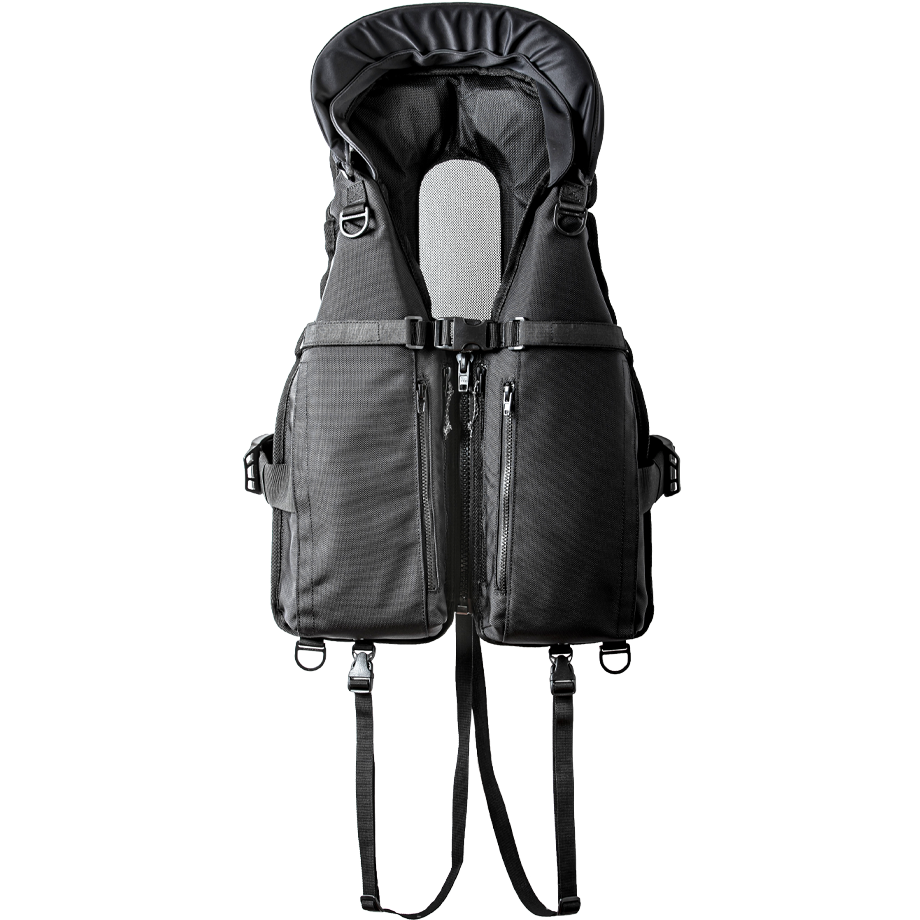
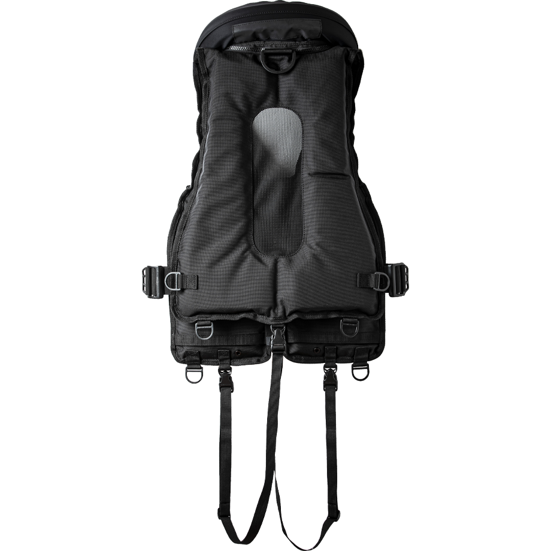
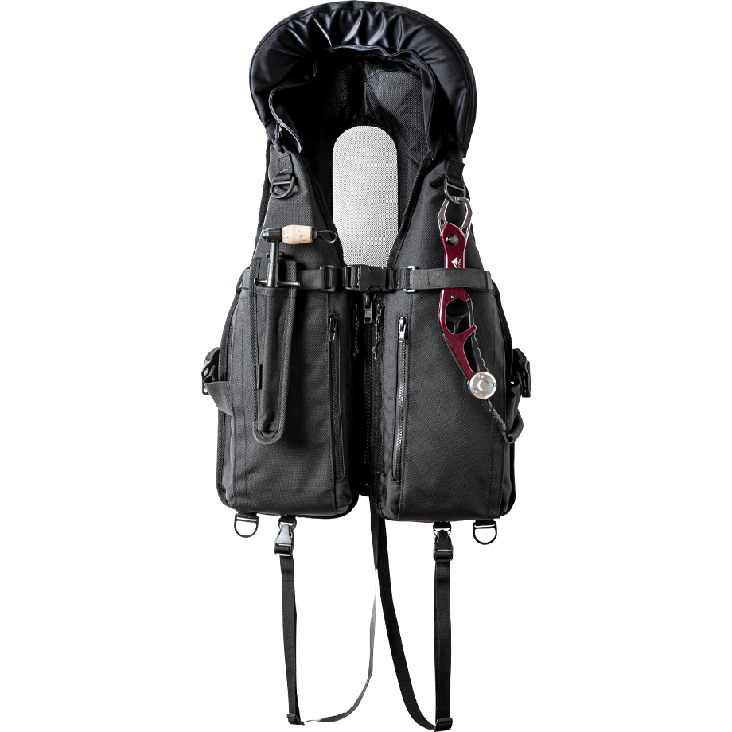
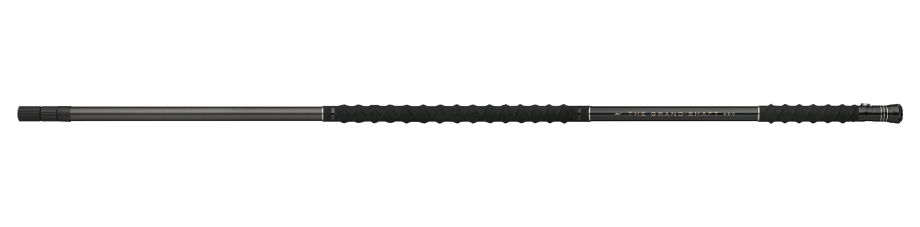
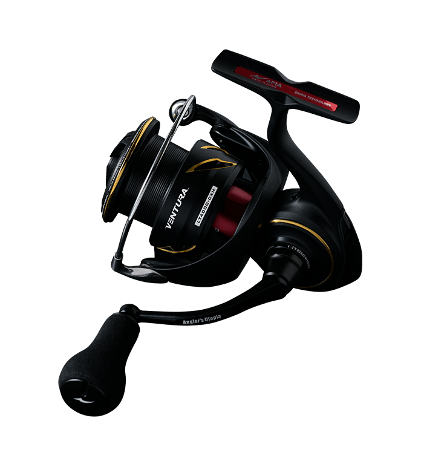

ガネット Ver.2
（GANNET Ver.2）
ガネット Ver.2（GANNET Ver.2）はAPIA（アピア）のフローティングベスト（ライフジャケット）です。
フィールドでのテストを重ねて進化を続けてきたガネットを、キャスト・ファイト・ランディングのすべての動作で求められる「装用感」から徹底的に見直したモデル。素材選定から構造設計まで再構築し、タフさはそのままに、より軽快な着用感を実現しています。

画像出典:APIA公式HP
スペック
- メーカー
- APIA（アピア）
- タイプ
- フローティングベスト
- サイズ
- フリー
- カラー
- ブラック
- 浮力
- 7.5kg/24h
- 本体素材
- コーデュラ バリスティック ホロフィル エアー
- 樹脂パーツ
- デュラフレックス（USA）
- ファスナー
- YKK ビスロン®ファスナー
- 価格
- 30,800円（税込）
▼今すぐチェック
ガネット Ver.2の特徴
長時間でも集中力を妨げない、軽快さとタフさを両立したフローティングベスト
-
バリスティック生地×中空糸で軽くてタフ
太いコーデュラ糸を高密度に織り上げたバリスティック生地に、中空糸技術「Hollofil AIR™」を採用した素材を使用。優れた耐久性を保ちながら軽量化している。
-
動きやすさと通気性を見直した設計
腕まわり・首まわりを広げてすっきりしたシルエットと動きやすさを両立。枕部分はやわらかいクロロプレン生地でコンパクト化し、背面ベンチレーションも大型化してムレにくくしている。
-
4つのジップポケットと拡張性
4つのジップポケットで収納力が大きく向上。奥側ポケットはクッション構造でスマートフォンを保護し、手前側にはスナップケースやリーダーを収納できる（防水ポケットではない）。背面の大型Dリング、長さ調整できるフロントベルト、反射材も備える。
ガネット Ver.2の使い方
着用したら、サイドベルトのアジャスターで体に合わせてフィット感を調整します。1アクションでスムーズにサイズ調整できるので、重ね着の量が変わる季節の変わり目でもすぐに合わせられます。
フロントベルトにはフィッシュグリップやグローブ、背面の大型Dリングにはランディングネットなどを取り付けて使います。枕部分は着脱式なので、用途に合わせて付け外しできます。
ガネット Ver.2のがおすすめの人
磯や堤防、サーフ、河川のウェーディングなど、ルアー釣りで長時間歩き回る人に向いたフローティングベストです。
キャストやルアー操作の邪魔になりにくく、背面の着丈が短いのでウエストバッグとも干渉しにくいのがポイント。装備を体にまとめて身軽に動きたい人にオススメです。
ワンポイント
公式ページには国土交通省の型式承認（桜マーク）についての記載がありません。船釣りなど、桜マーク付きのライフジャケットが必要な場面で使えるかは、購入前に販売店やメーカーに確認しましょう。
ポケットは防水ではないので、スマートフォンなどは防水ケースに入れてから収納すると安心です。
ガネット Ver.2の主な仕様
| 項目 | 仕様 | ポイント |
|---|---|---|
| 浮力 | 7.5kg/24h | フローティングベストとしての浮力 |
| ポケット | ジップポケット×4 | 奥側はクッション構造でスマホを保護（防水ではない） |
| 調整 | サイドベルトのアジャスター | 1アクションでサイズ調整 |
| 枕 | 着脱式・クロロプレン | やわらかくコンパクト |
仕様は公式サイトの記載によるものです。最新の仕様や在庫は購入前に販売ページで確認してください。
ディテール
ガネット Ver.2のディテールを紹介します。
4つのジップポケットとフロントベルトで、小物をまとめて持ち歩ける。

バック大型化した背面ベンチレーションと大型Dリング。

使用例フィッシュグリップなどを取り付けた使用例。
画像出典:APIA公式HP
ガネット Ver.2とあわせてチェックしたいアイテム
-

ザ・グランドシャフト450 アピア 詳細はこちら＞大型魚の取り込みを想定した高強度・高剛性のランディングシャフト。磯や堤防で大物を狙うならあわせて揃えたい。
-

25 ベンチュラ LT4000-CXH アピア 詳細はこちら＞アピアのシーバス用スピニングリール。装備からタックルまで「アピアで揃えたい」人に。
-
 フージンZ 6th
アピア
詳細はこちら＞
フージンZ 6th
アピア
詳細はこちら＞
アピアのフラッグシップシーバスロッド。